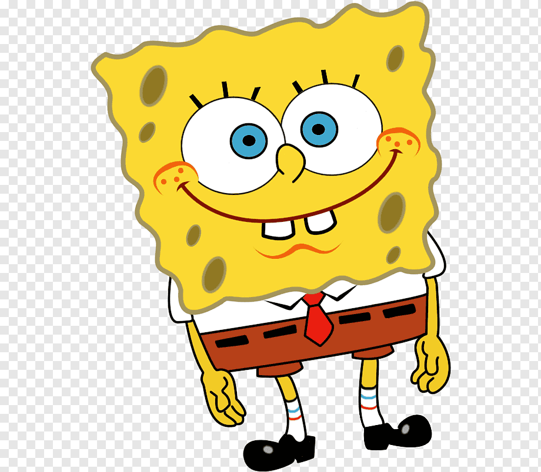
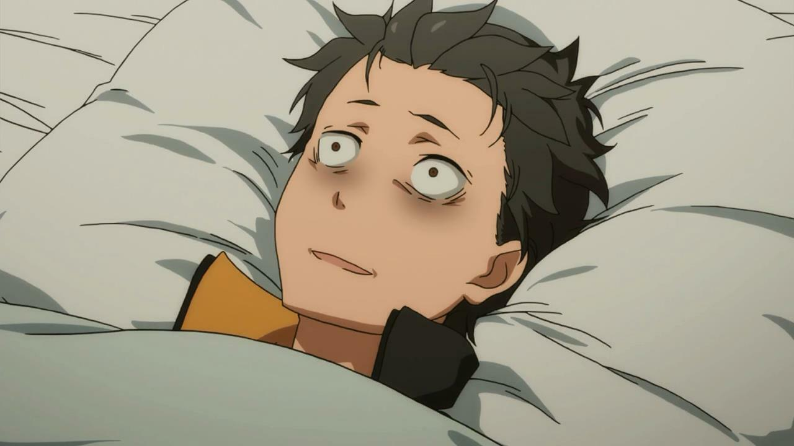
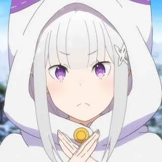
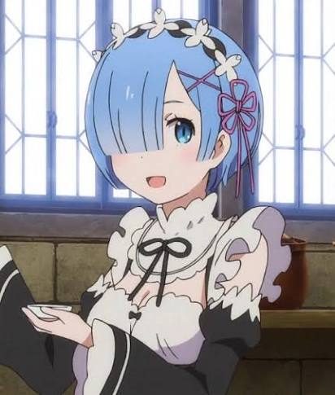

Un cuaderno abierto, lleno de trazos
Caricaturas, paisajes y anime, dibujados a mano y compartidos aquí como en las páginas de un cuaderno de bocetos.
Sobre mí
Me llamo Lucía Fernández y mantengo este cuaderno de trazos desde mi taller en casa. Dibujo desde chica y, con los años, la caricatura, el paisaje y el anime se convirtieron en mis tres cuadernos favoritos dentro de uno solo.
Cada dibujo que ves acá está hecho con lápiz, tinta o color digital, y subido tal cual sale del cuaderno: sin filtros ni pretensiones, solo práctica constante y ganas de compartir lo que voy aprendiendo.
Si un dibujo te gusta, te trae una idea o simplemente querés saludar, la sección de contacto está siempre abierta.
Catálogo
Elegí una categoría para ver los dibujos correspondientes.








Contacto
¿Tenés un comentario, un pedido de dibujo o simplemente querés saludar? Escribime.